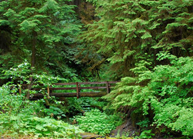

In 1543, Polish astronomer Nicolaus Copernicus published “On the Revolutions of the Celestial Spheres,” in which he challenged the view that the sun revolved around the Earth, arguing instead that the Earth revolved around the sun. With his new model of the solar system, he began a wide-ranging debate among scientists, theologians and others. His alternative to the earlier Ptolemaic model - which had the earth at the center of the universe - led to a revolution in thinking, and to a new worldview.
Today we need a similar shift in our worldview, in how we think about the relationship between the Earth and the economy. The issue now is not which celestial sphere revolves around the other, but whether the environment is part of the economy or the economy is part of the environment. Economists see the environment as a subset of the economy. Ecologists, on the other hand, see the economy as a subset of the environment.
Like Ptolemy’s view of the solar system, the economists’ view is confusing efforts to understand our modern world. It has created an economy that is out of sync with the ecosystem on which it depends.
Economic theory and economic indicators do not explain how the economy is disrupting and destroying the Earth’s natural systems. Economic theory does not explain why Arctic sea ice is melting. It does not explain why grasslands are turning into desert in northwestern China, why coral reefs are dying in the South Pacific, or why the Newfoundland cod fishery collapsed. Nor does it explain why we are in the early stages of the greatest extinction of plants and animals since the dinosaurs disappeared 65 million years ago. Yet economics is essential to measuring the cost to society of these excesses.
Evidence that the economy is in conflict with the Earth’s natural systems can be seen in the daily news reports of collapsing fisheries, shrinking forests, eroding soils, deteriorating rangelands, expanding deserts, rising atmospheric carbon dioxide levels, falling water tables, rising temperatures, more destructive storms, melting glaciers, rising sea level, dying coral reefs, and disappearing species. These trends, which mark an increasingly stressed relationship between the economy and the Earth’s ecosystem, are taking a growing economic toll. At some point, this could overwhelm the worldwide forces of progress, leading to economic decline.
These increasingly visible trends indicate that if the operation of the subsystem, the economy, is not compatible with the behavior of the larger system - the Earth’s ecosystem - both will eventually suffer. Recent events in the economic and financial systems cause one to wonder if we’re beginning to see the effects of an economy outgrowing its natural base. The larger the economy becomes relative to the ecosystem, and the more it presses against the Earth’s natural limits, the more destructive this incompatibility will be. The challenge for our generation is to reverse these trends before environmental deterioration leads to long-term economic decline, as it did for so many earlier civilizations.
An environmentally sustainable economy - an eco-economy - requires that the principles of ecology establish the framework for the formulation of economic policy and that economists and ecologists work together to fashion the new economy. Ecologists understand that all economic activity, indeed all life, depends on the Earth’s ecosystem - the complex of individual species living together, interacting with each other and their physical habitat. These millions of species exist in an intricate balance, woven together by food chains, nutrient cycles, the hydrological cycle and the climate system. Economists know how to translate goals into policy. Economists and ecologists working together can design and build an eco-economy - one that can sustain progress.
Just as recognition that the Earth was not the center of the solar system set the stage for advances in astronomy, physics and related sciences, so will recognition that the economy is not the center of our world create the conditions to sustain economic progress and improve the human condition. After Copernicus outlined his revolutionary theory, there were two very different worldviews. Those who retained the Ptolemaic view of the world saw one world, and those who accepted the Copernican view saw a quite different one. The same is true today of the disparate worldviews of economists and ecologists.
These differences between ecology and economics are fundamental. For example, ecologists worry about limits, while economists tend not to recognize any such constraints. Ecologists, taking their cue from nature, think in terms of cycles, while economists are more likely to think linearly, or curvilinearly. Economists have a great faith in the market, while ecologists often fail to appreciate the market adequately.
The gap between economists and ecologists in their perception of the world as the 21st century began could not have been wider. Economists looked at the unprecedented growth of the global economy and of international trade and investment and forecast a promising future with more of the same. They noted with justifiable pride the sevenfold expansion of the economy since 1950, which raised output from $6 trillion of goods and services to $43 trillion in 2000 and boosted living standards to levels not dreamed of before. Ecologists looked at this same growth and realized that it was the product of burning vast quantities of artificially cheap fossil fuels, a process that destabilizes the climate. They looked ahead to see more intense heat waves, more destructive storms, melting ice caps and rising sea levels that would shrink the land area even as population continued to grow. While economists saw booming economic indicators, ecologists saw an economy that is altering the climate with unthinkable consequences.
Economists rely on the market to guide their decision-making. They respect the market because it can allocate resources with an efficiency that a central planner can never match (as the Soviets learned at great expense). Ecologists view the market with less reverence because they see a market that is not telling the truth. For example, when buying a gallon of gasoline, customers in effect pay to get the oil out of the ground, refine it into gasoline, and deliver it to the local service station. But they do not pay the health care costs of treating respiratory illness from air pollution, or the costs of climate disruption.
We have created an economy that is in conflict with its support systems, one that is fast depleting the Earth’s natural capital, moving the global economy onto an environmental path that will inevitably lead to economic decline. This economy cannot sustain economic progress; it cannot take us where we want to go. Just as Copernicus had to formulate a new astronomical worldview after several decades of celestial observations and mathematical calculations, we too must formulate a new economic worldview based on several decades of environmental observations and analyses. A stable relationship between the economy and the Earth’s ecosystem is essential if economic progress is to be sustained.
Although the idea that economics must be integrated into ecology may seem radical to many, evidence is mounting that it is the only approach that reflects reality. When observations no longer support theory, it is time to change the theory - what science historian Thomas Kuhn calls a paradigm shift. If the economy is a subset of the Earth’s ecosystem, the only formulation of economic policy that will succeed is one that respects the principles of ecology.
The good news is that economists are becoming more ecologically aware, recognizing the inherent dependence of the economy on the Earth’s ecosystem. For example, some 2,500 economists - including eight Nobel laureates - have endorsed the introduction of a carbon tax to stabilize climate. More and more economists are looking for ways to get the market to tell the ecological truth.
The existing industrial economic model cannot sustain economic progress. In our shortsighted efforts to sustain the global economy as currently structured, we are depleting the Earth’s natural capital. We spend a lot of time worrying about our economic deficits, but it is the ecological deficits that threaten our long-term economic future. Economic deficits are what we borrow from each other; ecological deficits are what we take from future generations.
|
 PICKSELATED / JIM (AWAY)/FLICKR Bridging the eco-economy divide: We spend a lot of time worrying about our economic deficits, but the ecological deficits are what threaten our long-term economic future. |
|
|